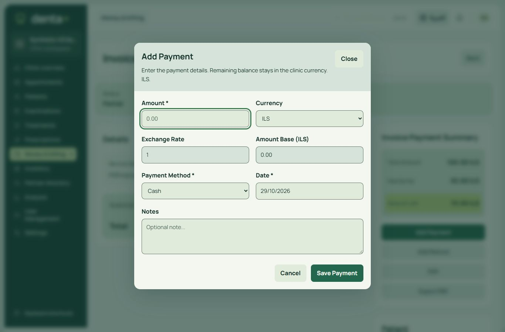
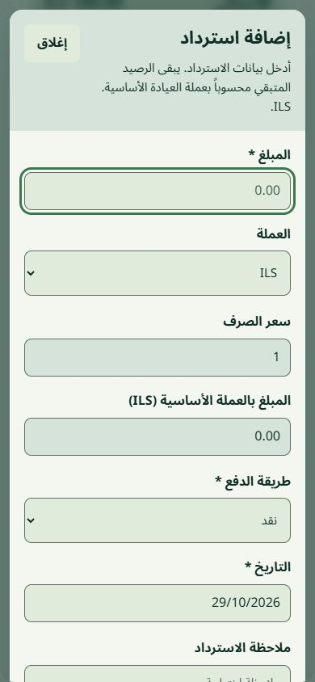
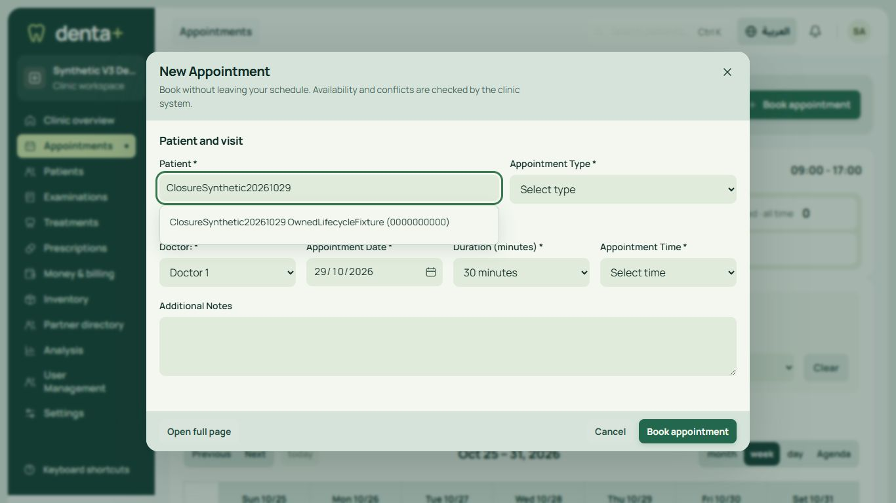
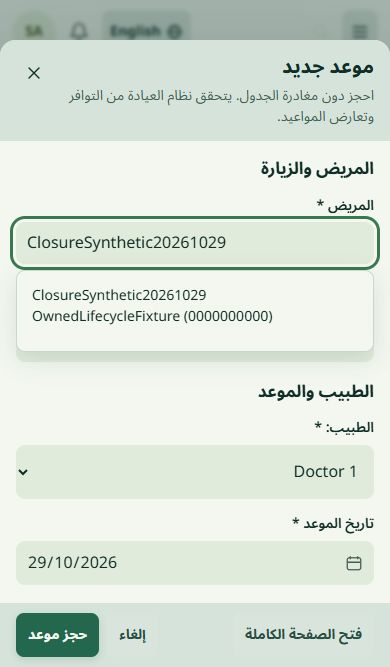

Current finance Dialog/Field port: native modality and compact controls
Arabic mobile refund: form scrolls naturally; footer reach verified separatelyFinance component and actual synthetic ledger acceptance; explicit limits
Settings controls, ledger-first finance and balanced dialogs
Actual CI4 synthetic application. Desktop1366x900 and Arabic mobile390x844. Full-size image opens on click. Production is unchanged.
Previous matched component review | Current scoped receipt

Latest owned shadcn-aligned combobox - canonical patient ID retained
Arabic mobile - no date/icon overlap; listbox in native top layerCurrent component-port acceptance and limits
These are native PHP/JavaScript adaptations of shadcn Input, Input Group, Dialog and Table patterns. The native browser file/time picker and submission contracts remain; no React dependency was added. Short create dialogs are compact; complex clinical/signing/provisioning workflows retain their existing full page. No claim that every reachable modal or physical device is certified.